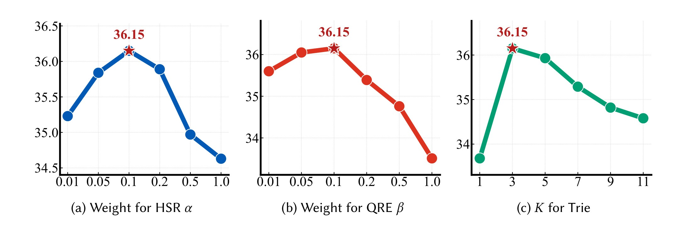
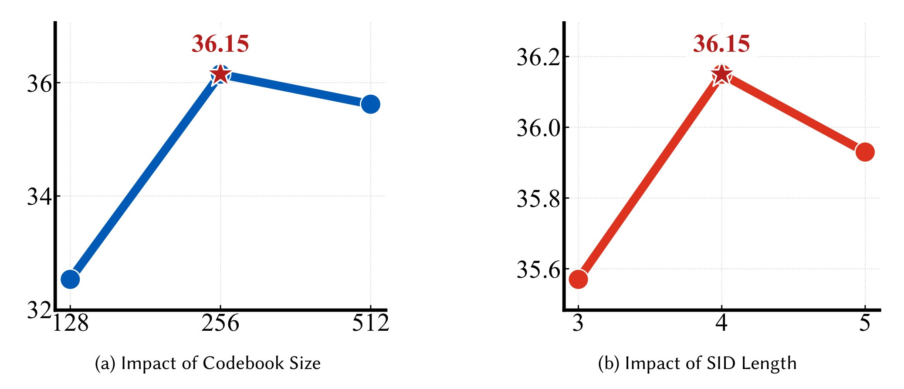
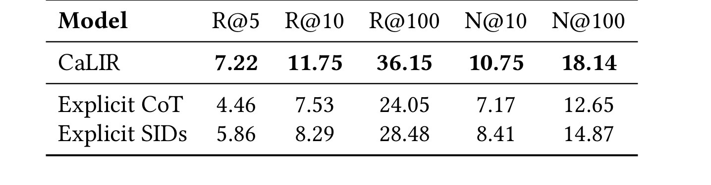
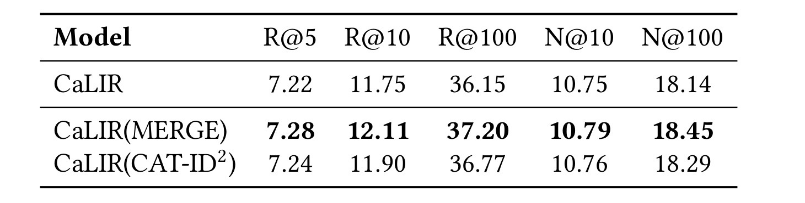
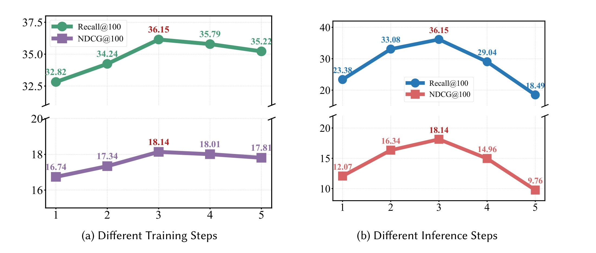
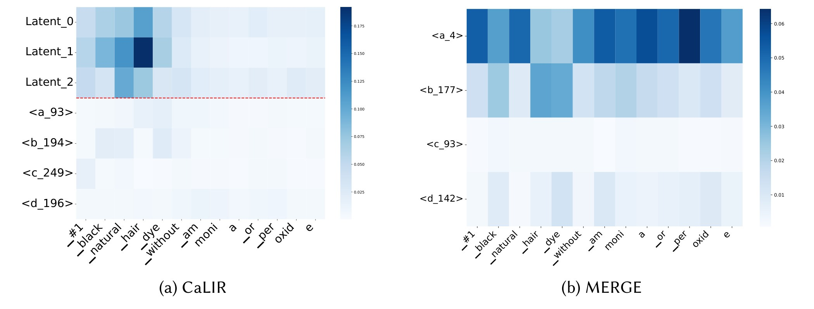
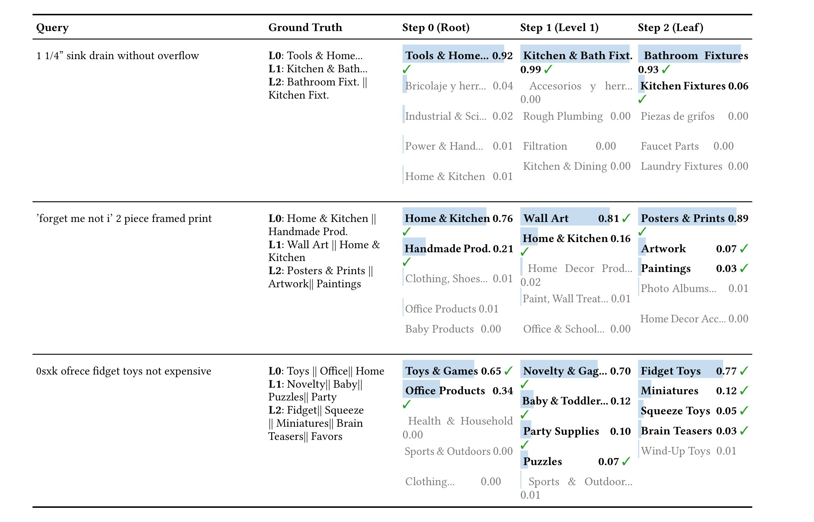
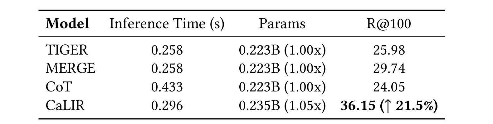

Beyond Matching: Category-Guided Latent Intent Reasoning for Generative Retrieval in E-Commerce
本文提出 CaLIR（Category-guided Latent Intent Reasoning），面向电商搜索里的 generative retrieval：系统不再把 query 和商品候选先编码成向量再排序，而是让生成模型直接输出商品 Semantic ID（SID）。论文的一作主机构是北京航空航天大学，合作机构包括美团、中国人民大学、北京信息科技大学等；题名、作者与摘要已由本地 PDF 元数据和正文核对。论文入口：arXiv:2606.07075。代码/项目页：本轮未核验到独立项目页，按未确认处理。
这篇文章值得精读，不是因为它把“推理”这个词放进了推荐系统，而是因为它把电商检索里一个长期含混的接口拆开了：短 query 到人工构造 SID 之间并没有天然语义连续性，直接生成 SID 会把 query 理解、类目归纳、候选约束和最终 item token 混在一个自回归过程里。CaLIR 的做法是在生成 SID 之前插入连续 latent states，用商品类目层级监督这些状态，再用它们组装 query-specific dynamic trie 做约束解码。换句话说，它尝试让模型先在隐藏空间里形成“粗到细的购物意图路径”，再进入 SID token 空间。
1. 背景和问题
电商搜索和一般文本检索的差异在于，query 通常很短，但意图密度很高。一个用户写 “durable case for 16-inch MacBook Pro” 时，系统需要同时理解品类、适配设备、材质、场景和可替代商品；另一个用户写混合语言、拼写错误或只有尺寸数字时，query 的自然语言形式更弱，但仍可能对应多个相关商品。传统 sparse retrieval 对精确词面匹配很敏感，dense retrieval 能缓解同义表达，但遇到长尾属性、品牌型号、类目歧义和候选多正例时，单个 embedding 相似度仍不一定稳定。
Generative Retrieval 把检索改写成序列生成：模型直接从 query 生成商品的 Semantic ID。这个范式的吸引力是可以把检索、排序和候选生成的一部分统一进 seq2seq 任务；它的风险是 SID 本身通常来自聚类或量化，是一串形如 <a_1><b_2><c_3> 的离散代码，并不天然携带自然语言语义。于是模型要学习的不是“query 与商品语义相似”，而是“query 到抽象代码序列”的映射。若第一个 SID token 错了，beam search 很容易被推到错误的 catalog branch，后续 token 再补救就很难。
显式 Chain-of-Thought 看起来可以解决这个语义断层：先生成“Electronics -> Laptop Accessories -> Laptop Case”这样的类目或文字 rationale，再生成 item SID。但电商搜索对延迟非常敏感，显式 CoT 会增加 autoregressive token 数；更重要的是，显式中间 token 一旦生成错误，后续 item SID 会被错误 reasoning chain 条件化。CaLIR 的基本判断是：需要中间推理，但不一定要把中间推理写成自然语言或类目 token。类目层级可以作为监督信号，推理过程可以留在连续 hidden states 里。

Figure 1 是理解本文问题设定的关键。上半部分展示 direct generation：query 直接指向 SID tokens，图中用断开的箭头强调自然语言购物意图和人工 SID 之间存在 representation gap。中间部分展示 explicit CoT：模型可以把 laptop case 的需求拆成设备、粗类目、细类目和属性，但这些步骤都要变成额外 token，带来高延迟。下半部分是 CaLIR 的位置：模型仍然沿“Electronics? -> Computers? -> Laptop Accessories!”这样的粗到细路径理解 query，但这个路径被压进 latent space，而不是显式输出。这个设计把两个目标放在一起：一方面用类目结构缓解 query-to-SID 的语义断层，另一方面避免让线上检索承担完整 CoT 的 token 成本。这里的“latent reasoning”不是不可解释的口号；它在后文会被 HSR、QRE 和 RCD 三个模块落到可训练、可消融、可约束解码的对象上。
从推荐系统工程角度看，CaLIR 关心的是 query-side grounding，而不是只优化 item-side SID construction。已有很多工作会改 SID 的构造方式，例如通过更好的聚类、残差量化、多层对齐或类目注入让 item identifier 更有结构。但即便 SID 空间更好，如果 query decoder 仍然直接进入 token generation，短 query 的类目意图仍可能没有被充分建模。CaLIR 把商品类目当作电商场景天然存在的 coarse-to-fine scaffold，用它监督生成 SID 前的 hidden states，这使得 query 先被组织成类目意图，再进入候选 item code 空间。
这篇论文还有一个重要边界：它不是通用 LLM reasoning 论文，也不是把 CoT 搬到搜索系统。它的目标很窄，集中在电商 generative retrieval 的在线低延迟约束下，如何让 query 到 SID 的过渡更稳。论文实验覆盖 ESCI-us、ESCI-es、ESCI-jp 三个多语言电商搜索数据集，也做了显式 CoT、SID 构造兼容、推理步数、attention、case、MS MARCO transfer、Qwen backbone 和 latency 对照。本文笔记中的数值均来自论文 PDF 表格，未做独立复现实验；因此这些指标应理解为论文报告值，而不是当前环境下的复算事实。这个边界会影响后续复现优先级。
2. 方法
2.1 从 query 到 SID 的三种建模方式
论文在 preliminaries 里先把三种检索生成方式形式化。第一种是标准 generative retrieval，给定 query $q$，模型直接生成商品 $d$ 的 SID $z_d$：
符号解释：$q$ 是用户购物 query，$z_d=(z_{d,1},\ldots,z_{d,|z_d|})$ 是商品 $d$ 的 SID token 序列，$z_{d,<i}$ 是已经生成的前缀，$P_\theta$ 是 seq2seq 模型给出的下一个 SID token 概率。这个式子说明 direct generation 的承诺发生得很早：一旦前缀落到某个 SID branch，beam search 的候选空间也随之收缩。对电商 query 来说，问题在于 $z_d$ 不是自然语言类别名，而是量化得到的人工代码；模型需要把 query 的型号、属性、用途和类目暗含地映射到这些代码上。
第二种是显式 reasoning。模型先生成 reasoning tokens $r=(r_1,\ldots,r_T)$，再在这些 token 条件下生成 SID：
符号解释：$r_t$ 可以是类目路径、属性描述或自然语言 rationale，$T$ 是显式 reasoning 的长度。显式 CoT 的优点是中间过程可读，缺点是多生成了 $T$ 个 token，而且这些 token 自己也可能错。对于在线电商搜索，这个额外 generation path 很难免费：它增加延迟，也增加了错误传播路径。若模型先把 query 解释成过窄的类目，后续 SID decoding 就会围绕这个错误解释展开。
CaLIR 使用第三种方式：不输出 reasoning tokens，而是在 decoder 里执行 $L$ 步连续 latent reasoning。给定 query encoder representation $H_{\mathrm{enc}}$，decoder hidden state 按步更新：
这些 hidden states 组成 latent intent path：
符号解释：$h_0$ 由 decoder start token 初始化，$h_l\in \mathbb{R}^{d_{\mathrm{model}}}$ 是第 $l$ 步连续推理状态，$R_q$ 是 query 的 latent intent path。它不是单独采样的随机变量，而是 Transformer decoder 在生成第一个 SID token 前产生的一组 hidden states。CaLIR 的核心就在于给这组 hidden states 加上商品类目监督，使它们不是无约束 recurrence，而是能对应 coarse-to-fine shopping intent。
2.2 RQ-VAE 索引：SID 不是自然语言标签
理解 CaLIR 前必须先理解 SID 的来源。论文沿用 generative retrieval 常见的 RQ-VAE 方式把商品文本 embedding 离散化。对商品 $d$，先用 product text encoder 得到连续表示：
符号解释：$x$ 是商品语义 embedding，$f_{\mathrm{emb}}$ 可由 Sentence-T5 这类预训练文本模型实现。随后 RQ-VAE encoder 把 $x$ 映射到低维 latent vector：
符号解释：$E$ 是 RQ-VAE encoder，$r_0$ 是初始 residual。残差量化会在多个 codebook 上逐层选择最近 codeword。第 $u$ 层 codebook 为 $S^{(u)}=\{e_p^{(u)}\}_{p=1}^{V_u}$，选择规则是：
符号解释：$s_u$ 是第 $u$ 层选中的离散 code index，$q_u$ 是对应 codeword，$r_{u+1}$ 是扣除当前 codeword 后的 residual。多层 residual quantization 的直觉是：早期 codebook 捕获更粗的语义因素，后续 codebook 捕获剩余细粒度差异。所有层选中的 code index 串起来就是商品 SID：
RQ-VAE 的训练目标由重构、codebook 和 commitment 三部分组成：
符号解释：$L_{\mathrm{recon}}$ 让 decoder 能从量化表示重构商品 embedding，$L_{\mathrm{codebook}}$ 推动选中的 codeword 贴近 residual，$L_{\mathrm{commit}}$ 防止 encoder 输出漂移，$\lambda_{\mathrm{rq}}$ 控制 commitment 权重。论文还提到用 Sinkhorn 处理多个商品得到同一 SID 的冲突。对 CaLIR 来说，这一索引阶段不是贡献重点，但它决定了后续 decoder 要生成的目标空间。如果 SID 空间本身过粗、过长、冲突多或和商品语义不稳定，latent reasoning 再强也只能在一个不理想的 code space 上解码。
2.3 总体框架：索引、训练、推理三段式连接

Figure 2 把 CaLIR 的三段串起来。左上角 indexing 用 RQ-VAE 把 item information 编成 SID；左下训练部分把 query 输入 encoder，decoder 先走 latent reasoning steps，再生成 SID；中间训练模块包含 Hierarchical Semantic Reasoning 和 Query-wise Reasoning Enhancement，前者把 latent state 对齐到类目层级，后者把同一 query 的多个正例类目作为多正例对齐对象；右侧 inference 则根据 top-K predicted categories 组装 reasoning-aware dynamic trie，并在 constrained beam search 中生成候选 SID。这个图最重要的信息不是模块数量，而是信号方向：类目监督只在训练中塑造 latent states，推理时不要求生成显式类目文本；dynamic trie 则把 inferred categories 转化成候选空间约束，使最终 SID decoding 不再面对全 catalog 的无差别前缀空间。图中 indexing 和 inference 之间的 “indices/SID” 也提示了一个工程事实：商品侧的 category-level trie 可以离线预建，线上做的是按 query 激活和 union，而不是实时重建全量索引。
CaLIR 的训练目标不是简单地在 T5 后面加一个分类头。它要求 decoder 在第一个 item SID token 出现之前执行 $L$ 步 hidden-state reasoning，这些状态分别对应不同类目层级。直觉上，$h_1$ 应更接近粗类目，例如 Home & Kitchen 或 Electronics；$h_2$ 应接近中间类目，例如 Laptop Accessories；$h_3$ 继续靠近 leaf category 或 product family。这样做的目的不是让模型在 hidden space 里“想得更久”，而是把 query 的购物意图先投到类目结构上，再进入 SID 生成。
2.4 HSR：用层级类目监督 latent states
Hierarchical Semantic Reasoning（HSR）负责给每一步 latent state 一个类目层级监督。设商品 $d$ 的类目路径为 $C_d=\{c_d^1,c_d^2,\ldots,c_d^{L_d}\}$，其中 $L_d$ 是该商品实际类目深度，$L$ 是模型最大 reasoning depth。论文先对第 $l$ 步 hidden state 做投影：
符号解释：$\phi_l(\cdot)$ 是第 $l$ 层专用 embedding projector，$z_l$ 是投影后的 latent intent embedding。为什么要投影？因为 decoder hidden state 同时服务生成和注意力，直接拿它做类目分类未必合适；投影层提供一个专门面向 category distribution 的语义空间。
然后，模型在第 $l$ 层预测该商品的类目标签。为了避免预测出与父类不一致的子类，论文引入 hierarchy mask $M(c_d^{l-1})$：
符号解释：$W_l^c$ 是第 $l$ 层类目分类权重矩阵，$M(c_d^{l-1})$ 根据父类把无效子类的 logits 置为 $-\infty$，第一层的父类可视为 virtual root。这个 mask 很关键：如果没有层级约束，模型可能在粗类目上预测 Electronics，却在下一层跳到 Kitchen Fixtures，形成逻辑不一致的 latent path。电商类目天然有树形结构，HSR 就是把这个结构作为弱监督压进 decoder 的 pre-generation states。
不同商品的类目深度可能不同，因此 HSR loss 只对有效层级生效：
符号解释：$I(l\le L_d)$ 是 mask indicator，类目深度不足的样本不会在不存在的层级上产生损失。这个设计使 CaLIR 可以处理不等深度 taxonomy，而不是强制所有商品都有同样长的类目路径。对工程实现来说，训练数据需要同时有 query、target SID 和 target item category path；如果业务日志里类目体系不稳定、历史类目迁移频繁或 leaf category 太噪，HSR 监督本身就会变成风险源。
2.5 QRE：多正例 query 的类别原型对齐
电商搜索的另一个难点是 multi-positive。一个 query 可能对应多个合法商品，这些商品可能共享父类但分布在不同 leaf category。若训练时只把某个 target item 的 category path 当作唯一答案，latent state 会被推向单一路径，无法表达 query 的多意图。Query-wise Reasoning Enhancement（QRE）就是为这个问题设计的。
论文把 HSR 分类权重矩阵 $W_l^c$ 的行向量当作类别原型。对第 $i$ 个 query $q_i$，在 reasoning level $l$，令 $P_{i,l}$ 表示该 query 在第 $l$ 层的正类目集合。模型计算 projected latent embedding $z_{i,l}$ 与类目原型 $v_j$ 的 cosine similarity：
符号解释：$v_j$ 是类目 $c_j$ 对应的 prototype，$\tau$ 是温度参数，用于控制分布尖锐程度。然后用 multi-positive InfoNCE 把 query latent state 拉近所有正类目原型，同时推远 batch 内负类目：
符号解释：$N_B$ 是当前 batch 出现的类目候选集合，$P_{i,l}$ 可以包含多个正类目。这个式子比单正例交叉熵更适合电商 query，因为它允许 “framed print” 同时靠近 Home & Kitchen 与 Handmade Products 等合理分支，而不是强迫所有相关 item 共享一条 leaf path。
QRE 在所有有效层级上累加：
最终训练目标把 SID generation、HSR 和 QRE 合在一起：
符号解释：$L_{\mathrm{gen}}=-\log P(y\mid h_L)$ 是最终 SID 生成损失，$\alpha$ 控制 HSR 类目分类监督强度，$\beta$ 控制 QRE 对比学习强度。这个目标强调一个平衡：辅助 reasoning loss 太弱，latent states 不会形成稳定类目意图；太强，又可能压过最终 item retrieval 目标，使模型过度拟合类目而不是找商品。后文 Figure 3 的超参曲线正是在验证这个平衡。
2.6 RCD：把 latent intent 转成 query-specific trie 约束
训练阶段塑造 latent states 还不够，推理阶段需要把它们用于减少 SID decoding 的搜索空间。CaLIR 的 Reasoning-aware Constrained Decoding（RCD）有两步：先用 inferred categories 组装 query-specific dynamic trie，再在该 trie 上做 constrained beam search。
论文先为每个类目 $c$ 离线预建 category-level SID prefix trie $T_c$，其中包含属于该类目的商品 SID 路径。推理时，模型根据最终 reasoning step 的类目概率选出 top-K 类目 $C_{\mathrm{top}\text{-}K}$，并组装 active trie：
符号解释：$T_c$ 是离线预建的类目 trie，$C_{\mathrm{top}\text{-}K}$ 是 query 当前最可能的 top-K 类目集合，$\mathrm{Assemble}$ 是轻量 lookup 与 logical union，不是在请求时把所有商品 SID 插入新 trie。这个 distinction 很重要：RCD 若要上线，不能把“动态构建 trie”理解成在线重建索引，它在线上做的应是激活和合并已有类目 trie。
在第 $t$ 个 SID decoding step，若当前前缀是 $y_{<t}$，合法下一个 token 集合由 trie 决定：
模型只在合法 token 上归一化：
符号解释：$\ell_w$ 是 decoder 对 token $w$ 的 logit，$V_{\mathrm{valid}}$ 是当前前缀下仍能构成有效商品 SID 的 token 集合。非法 token 不参与 softmax，因此 beam search 不会走出 active category trie。论文还把 reasoning states 与 encoder representations 拼接成 $H_{\mathrm{full}}=[H_{\mathrm{enc}};H_{\mathrm{reasoning}}]$，使 decoder 生成 SID 时既能看 query，又能看 latent intent path。RCD 的工程意义是把“模型认为 query 可能属于哪些类目”转成候选空间缩减，而不是只把类目监督留在训练 loss 里。
这个推理流程也带来边界：top-K 太小会漏掉相关类目，top-K 太大又会放进太多无关 SID；类目 trie 若随商品库更新滞后，RCD 可能约束到旧 catalog；类目预测若对长尾 query 不稳定，active trie 会把正确 item 从候选空间里排除。因此 CaLIR 不是一个可以直接脱离类目质量的模型模块，它依赖稳定 taxonomy、可维护 SID index 和可监控的类目预测分布。
3. 实验结果
3.1 实验设置和评价口径
论文主实验使用 ESCI-us、ESCI-es、ESCI-jp 三个电商搜索数据集，覆盖英文、西班牙语、日语场景。任务是给定 query 检索相关商品，指标包括 Recall@5、Recall@10、Recall@100、NDCG@10、NDCG@100。baselines 分成三类：sparse retrieval，如 BM25；dense retrieval，如 DPR、MPNet、Sentence-T5、BGE-m3；generative retrieval，如 DSI、TIGER、Hi-Gen、LTRGR、RIPOR、CAT-ID2、MERGE。这个 baseline 组合能同时检验 CaLIR 是否只是超过旧式词面检索，还是能超过近年来 SID-based generative retrieval。
需要注意，论文报告的所有指标均来自作者实验设置，本文没有重新训练模型，也没有复算显著性检验。Table 4 中 CaLIR 行带星号表示论文声称相对对应指标最强 baseline 的 paired t-test 显著提升，口径为 $p<0.05$。读这些数时应把它们当作论文内部证据链的一部分：它们能说明作者实验支持 CaLIR，但还不能直接证明在另一个业务 taxonomy、另一个商品库或另一个延迟预算下会复现同等收益。
3.2 主结果：CaLIR 在三个 ESCI 数据集上整体领先

Table 4 是本文最重要的定量证据。CaLIR 在 ESCI-us 上达到 R@100 36.15、N@100 18.14，明显高于 generative retrieval baseline 中的 MERGE 29.74/15.17、CAT-ID2 29.03/14.53 和 TIGER 25.98/12.68；在 ESCI-es 上，CaLIR 的 R@100 为 34.83、N@100 为 20.03，高于 CAT-ID2 的 31.44/18.01 与 MERGE 的 30.86/17.45；在 ESCI-jp 上，CaLIR 的 R@100 为 31.71、N@100 为 18.85，也高于 RIPOR、CAT-ID2、MERGE 等强 generative baselines。这个表的价值在于它不是只和 dense retrieval 比，也不是只在一个语言数据集上有效；它把 sparse、dense、generative 三条路线放在同一张表里，显示 CaLIR 的主要收益出现在 generative retrieval 组内。换句话说，论文想证明的不是“生成式检索比传统检索更好”这个大命题，而是“在 SID-based generative retrieval 内，query-side category-guided latent reasoning 可以补上 direct query-to-SID matching 的短板”。对工程读者来说，最值得关注的是 R@100 和 N@100，因为这两个指标更接近候选召回质量和排序前列质量；CaLIR 同时提升二者，说明它不是单纯扩大候选覆盖后牺牲排序位置。
主结果也提示一个可能的适用条件：CaLIR 的优势在 ESCI-us/es/jp 三个数据集都存在，但不同语言上的绝对数值和提升幅度不同。原因可能来自 query 语言、商品描述质量、类目分布、训练样本规模以及 SID 构造质量。若迁移到内部系统，不能只看总表均值，需要按语言、类目深度、query 长度、品牌/型号 query、长尾 leaf category 和多正例数量分桶复核。
3.3 消融：HSR、QRE、RCD 分别贡献了什么

Table 5 把 CaLIR 拆成四个阶段：TIGER、空 latent reasoning、加入 HSR、加入 HSR+QRE、最终加入 RCD。这个表说明，仅仅在 decoder 前放一些空 reasoning states 不足以解释收益；在 ESCI-us 上，w/ empty reasoning 的 R@100 为 26.38，和 TIGER 的 25.98 接近。加入 HSR 后，R@100 提升到 32.76，说明类目层级监督是第一个主要增益来源。加入 QRE 后，ESCI-us R@100 进一步到 34.10，N@100 到 17.57，说明多正例 query 的类别原型对齐能继续提升 latent state 的判别性和多意图覆盖。最终加入 RCD 后，R@100 到 36.15，N@100 到 18.14，说明把 inferred categories 转成 dynamic trie 约束并不只是推理加速技巧，也能改善最终检索质量。这个消融链条和方法设计是闭合的：HSR 负责 coarse-to-fine 类目路径，QRE 负责多正例 query 的几何对齐，RCD 负责把推理结果变成候选空间约束。如果只看主结果，可能以为 CaLIR 的收益来自更长 decoder 或更多参数；Table 5 则把收益明确拆回三个有语义的模块。
3.4 参数敏感性：辅助目标和 SID 空间都需要平衡

Figure 3 展示三个超参对 ESCI-us R@100 的影响。$\alpha$ 是 HSR 的权重，$\beta$ 是 QRE 的权重，$K$ 是 RCD 组装 dynamic trie 时选取的 top categories 数量。三条曲线都有类似的“先升后降”趋势。$\alpha$ 或 $\beta$ 太小，latent states 接收不到足够类目监督或多正例对齐；太大，则辅助任务会和最终 SID generation 竞争，使模型过度拟合类目而不是商品检索。$K$ 的曲线更贴近线上候选约束：$K$ 太小容易把正确类目排除在 active trie 外，伤 recall；$K$ 太大又会引入过多无关候选，弱化 RCD 的剪枝效果。作者报告的最佳点是 $\alpha=0.1$、$\beta=0.1$、$K=3$。这张图提醒复现者不要把 CaLIR 看成免调参模块，尤其是 $K$ 与业务 taxonomy 宽度、query 多意图程度和 beam size 都有关。

Figure 4 回到 item-side SID space。左图显示 codebook size 在 256 处较好，右图显示 SID length 为 4 时较好。这个结果的含义是：CaLIR 虽然把贡献重点放在 query-side latent reasoning，但它仍然依赖一个可用的 SID 空间。codebook 太小，不同商品容易共享过粗的 code，导致 item 区分能力不足；codebook 太大，SID 空间可能过于稀疏或不够紧凑；SID 过短无法表达足够层级，过长又增加生成步数，并可能让后续 token 的边际信息下降。对工程落地来说，CaLIR 的复现不能只调 HSR/QRE/RCD，也要同时检查商品 embedding、RQ-VAE 训练、collision 处理、SID 长度和 codebook size。
3.5 显式 CoT/SID 对照：连续 latent reasoning 比显式中间 token 更合适

Table 6 直接回应“为什么不生成显式推理链”。在 ESCI-us 上，CaLIR 的 R@100 为 36.15，Explicit CoT 为 24.05，Explicit SIDs 为 28.48；N@100 分别为 18.14、12.65、14.87。这个结果支持作者的判断：把中间推理路径显式化并不自动带来更好检索。Explicit CoT 需要先生成自然语言或类目描述，再生成 item SID，额外 token 带来延迟，也可能让后续解码受错误 rationale 影响。Explicit SIDs 比 CoT 好，说明类目式中间信号确实有价值，但仍不如 CaLIR，因为它仍要把 reasoning path 离散输出出来。CaLIR 的优势在于保持中间推理的连续性：latent states 可以表达多个可能类目方向，并在解码前作为 hidden context 和 trie 约束使用，而不需要先提交到一条显式文本路径。
3.6 SID 构造兼容性：query-side reasoning 可以叠加 item-side SID 改进

Table 7 把默认 CaLIR 的 SID 构造替换为 MERGE 和 CAT-ID2 这类 advanced SID construction。默认 CaLIR 在 ESCI-us 上 R@100 为 36.15、N@100 为 18.14；CaLIR(MERGE) 到 37.20/18.45，CaLIR(CAT-ID2) 到 36.77/18.29。这个表说明 CaLIR 并不是和某一种 SID 构造绑定；它改善的是 query 到 SID 前的 latent intent grounding，而 MERGE/CAT-ID2 改善的是 item identifier space。两者作用在不同阶段，因此可以叠加。这个结论对工程试验很重要：如果已有业务系统已经用更好的商品 ID 层级、类目对齐或多模态 SID，CaLIR 不必推翻原有 index 设计，而可以作为 query-side training/inference 组件接入。不过表中增益幅度并不大，也不是所有 SID 方法都会同样收益，说明 item-side 和 query-side 改进之间仍有匹配问题。
3.7 Reasoning step：三步是结构选择，不是越多越好

Figure 5 分成两个子图：左图改变训练时 reasoning steps，右图固定训练 steps 为 3 后改变推理时 steps。训练侧，3 步达到最佳 R@100 36.15 和 NDCG@100 18.14；少于 3 步，latent path 对 coarse-to-fine category hierarchy 的表达不足；多于 3 步，性能略降，说明额外 hidden states 不一定带来更多有效意图信息。推理侧同样显示 3 步最好，减少步数会弱化 latent path，增加到 4 或 5 步则明显退化。这个图的工程含义是，CaLIR 不是在线动态搜索 reasoning depth 的方法，而是在离线选定固定步数后部署。若线上为不同 query 动态增减 steps，可能改变训练/推理一致性，需要额外校验。它也提醒我们：latent reasoning 的“深度”并不是越长越像推理，必须和 taxonomy depth、监督信号和 decoder 使用方式匹配。
3.8 Attention 与案例：latent state 是否真的被 decoder 使用

Figure 6 试图回答一个定性问题：CaLIR 的 latent states 是否只是辅助训练信号，还是在生成 SID 时真正承载 query intent。图中 CaLIR 的 latent tokens 对 query words 如 black、natural、hair、dye 有更集中的 attention，而下方生成 SID token 对原 query 的 cross-attention 较弱。MERGE 的 heatmap 则更像生成 token 直接看 query words。作者的解释是：CaLIR 先用 latent states 聚合 query 意图，再让 SID generation 更多依赖这些已经整理过的 intent states；MERGE 更偏直接 query-to-SID attention。这个图不能单独证明 causal mechanism，但它和 HSR/QRE/RCD 的设计相互支持：如果 latent states 确实聚合了意图词，那么用它们预测 top categories 并组装 trie 就更有解释基础。

Table 8 给了三个案例。第一个 “1 1/4 sink drain without overflow” 是长尾尺寸和场景 query，CaLIR 在 root 级别给 Tools & Home 较高概率，并在 leaf 级别保留 Bathroom Fixtures 与 Kitchen Fixtures 等相关方向。第二个 “forget me not i 2 piece framed print” 有歧义，可能属于 Home & Kitchen，也可能属于 Handmade Products；表中可以看到 CaLIR 在 Step 0 同时给多个 root branch 分配概率，并在后续层级覆盖 Posters & Prints、Artwork、Paintings。第三个 query 含有 “0sxk ofrece” 这类噪声或混合语言 token，但模型仍把较高概率放到 Toys & Games、Novelty & Gag、Fidget Toys 等路径上。这个表的价值在于，它把“multi-positive category-guided latent reasoning”落到可观察样本：CaLIR 不是必须提前选定唯一 leaf category，而是可以在粗层保留多个合理分支，再让 constrained decoding 在这些 active branches 中生成 SID。它同时暴露了风险：如果类目标签或 ground truth 多正例不完整，模型看似保留的分支也可能只是数据标注偏差的反映。
3.9 迁移、backbone 和效率
论文还做了 MS MARCO transferability、Qwen3-0.6B backbone 和 latency 分析。MS MARCO 部分用 hierarchical K-means 构造 3 层伪类目，把 CaLIR 从电商 taxonomy 迁移到通用 passage ranking。作者报告 CaLIR 优于 LTRGR、RIPOR、CAT-ID2 和随机层级版本，说明当手工类目不存在时，自动诱导的 coarse-to-fine scaffold 也可能提供监督价值。不过这不是本文主战场，因为 CaLIR 的核心假设仍然来自电商类目自然存在。
Qwen3-0.6B backbone 分析显示，在同一 backbone 下 CaLIR 仍优于 TIGER，说明方法不完全依赖 T5。但论文也明确说 Qwen3-0.6B 下的绝对性能低于主实验 T5 设置，因此这部分不能解读为 Qwen backbone 更强，只能说明 CaLIR 的相对改进可在不同生成 backbone 上出现。

Table 11 是判断 CaLIR 能否服务低延迟电商检索的关键。TIGER 与 MERGE 的 inference time 都是 0.258s/query，CoT 是 0.433s/query，CaLIR 是 0.296s/query；参数量方面，CaLIR 为 0.235B，是 TIGER/MERGE 的 1.05x；R@100 上，CaLIR 为 36.15，高于 TIGER 25.98、MERGE 29.74 和 CoT 24.05。这个表体现了论文主张的 trade-off：CaLIR 比普通 GR baseline 慢一些，因为它增加 latent reasoning 和 RCD；但它比显式 CoT 快得多，同时效果更好。对工程落地来说，0.296s/query 这个绝对值不能直接照搬，因为论文是在单张 NVIDIA A100 80GB 上 batch inference 测得；真实线上还要看 batch size、beam size、trie union 实现、商品库更新、服务并发和 cache 策略。但相对关系有意义：连续 latent reasoning 比显式 token reasoning 更适合控制延迟，且参数增量主要来自方法模块，而不是换成更大模型。
4. 总结
4.1 我的判断
CaLIR 的主要贡献是把电商 generative retrieval 的 query-to-SID 语义断层拆成可训练的中间接口。它没有只在 item SID 构造上做文章，也没有把通用 CoT 生硬搬到搜索系统，而是利用电商天然类目层级监督 decoder 的 pre-generation hidden states，再用这些 states 约束 SID decoding。这个设计的研究价值在于：方法、消融、attention、case 和 latency 证据能形成相对闭合的链条。HSR 解释 coarse-to-fine 类目路径，QRE 解释多正例 query，RCD 解释推理阶段如何把 latent intent 变成候选约束，Table 11 则说明它比显式 CoT 更符合低延迟场景。
4.2 局限与风险
第一，CaLIR 强依赖类目体系质量。如果业务 taxonomy 频繁调整、类目深度不均或 leaf category 噪声很大，HSR 和 QRE 会把错误结构注入 latent states。第二，多正例集合的构造很关键；若 query 只标了一个购买商品，却实际上有多个相关类目，QRE 的正负样本边界会偏。第三，RCD 的 top-K 类目选择存在 recall 风险，top-K 过小会把正确 SID 从 active trie 中剪掉。第四，论文指标未覆盖真实线上 A/B、冷启动商品更新、实时库存变化和类目迁移，因此部署前需要额外做动态 catalog 测试。第五，Table 11 的延迟来自特定硬件和 batch 设置，不能直接替代业务服务延迟评估。
4.3 后续跟进
后续若要复现，第一步应先复刻 SID indexing 和 category-level trie，而不是直接实现 HSR/QRE；如果 SID 空间质量不稳，后续 reasoning 模块难以解释。第二步应按 query 长度、类目深度、多正例数量和语言分桶复查 Table 4/5 的收益，确认 CaLIR 是否只在某些样本段有效。第三步应单独压测 RCD 的 top-K、beam size 和 trie union 延迟，记录 correct item 被剪枝的比例。第四步可以把 Figure 6/8 这类定性分析转化成日志字段：保存 top-K categories、latent-step attention、active trie size 和最终 SID path，用于线上诊断。第五步需要等待作者是否释放代码或更多复现实验；在代码未核验前，这篇论文更适合作为候选方案和离线实验设计参考，而不是直接作为上线方案。